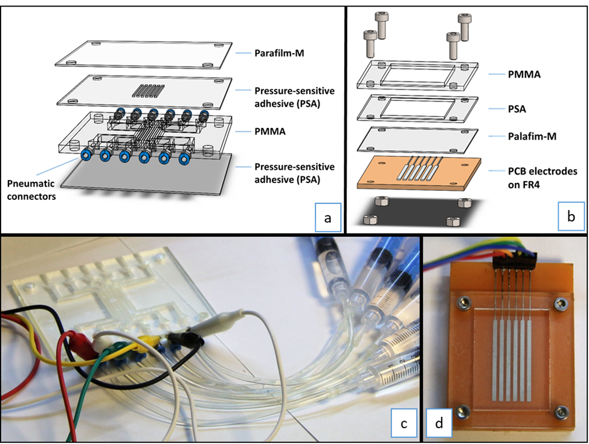

Transparent Electrowetting on dielectric with liquid electrodes (LEWOD)
This project focused on developing a transparent, flexible microfluidic platform for precise manipulation of droplets using electrowetting-on-dielectric (EWOD) technology. By designing and fabricating liquid electrodes instead of conventional solid electrodes, we created a device that combines high optical transparency with reliable droplet control at low voltages. The resulting system opens new opportunities for integrating digital microfluidics into applications that require flexible, transparent substrates—such as next-generation diagnostic devices, optical analysis, and wearable sensors.


